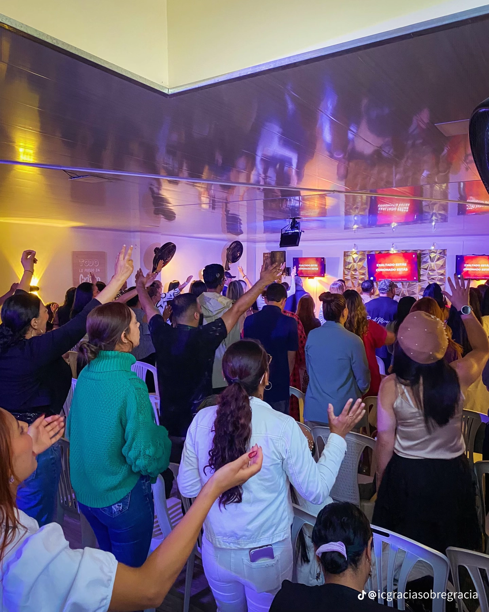
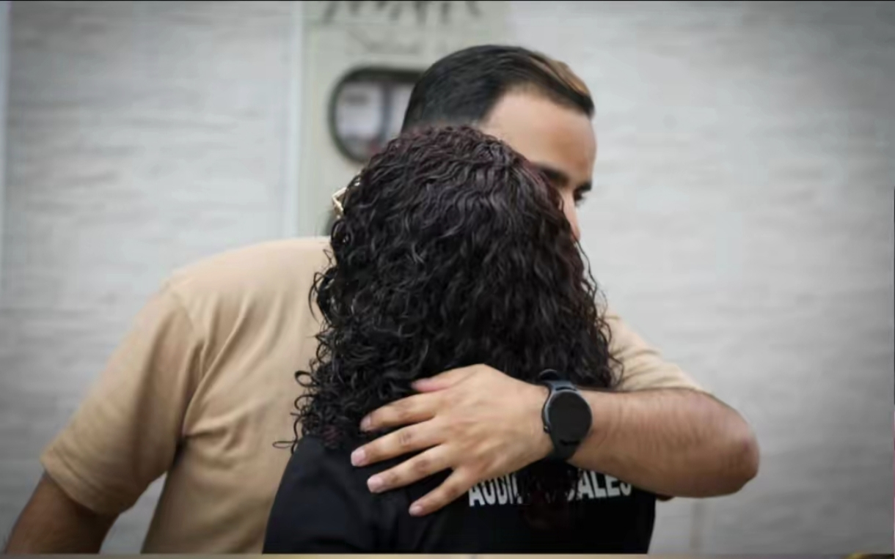

Estamos en Santa Rosa de Osos
Cra. 33 #26-31 Piso 2 Edificio Marión, Santa Rosa de Osos, Antioquia. Un lugar real, cercano y fácil de encontrar.
Iglesia Cristiana Gracia Sobre Gracia
Donde el amor crece, la fe se afirma y la familia se une. Un lugar donde puedes conocer a Dios, crecer en tu fe y encontrar una familia.
Cra. 33 #26-31 Piso 2 Edificio Marión, Santa Rosa de Osos, Antioquia. Un lugar real, cercano y fácil de encontrar.
Lunes, miércoles y sábado a las 7:00 PM, con espacios pensados para congregarnos y escuchar la Palabra.
La enseñanza reciente aparece en esta misma página y también puedes ir al canal oficial cuando quieras.
Nuestra esencia
La página existe para servir a las personas que desean conocer la congregación, escuchar una predicación y encontrar con claridad dónde estamos, cuándo nos reunimos y cómo contactarnos.
Queremos que el visitante perciba orden, calidez y reverencia, y que descubra desde los primeros segundos que aquí hay una congregación comprometida con la Palabra de Dios.

Identidad doctrinal
El contenido se mantiene intacto y recibe una presentación más clara para facilitar su lectura.
En la Iglesia Cristiana Gracia Sobre Gracia creemos firmemente en el Dios Trino: Padre, Hijo y Espíritu Santo, tres personas distintas y un solo Dios verdadero. Nuestra fe se fundamenta en la Palabra de Dios como única regla de fe y conducta, reconociendo la Biblia como la inspirada e infalible revelación divina.
Creemos que la salvación es un don gratuito de Dios, otorgado por Su gracia y recibido únicamente por medio de la fe en Jesucristo, no por obras humanas. En esta verdad se sostiene nuestra esperanza y se centra nuestra predicación: que solo en Cristo hay perdón, restauración y vida eterna.
Nos esforzamos por vivir conforme a la sana doctrina, proclamando el evangelio con pureza, edificando la iglesia sobre el fundamento apostólico y extendiendo el amor de Cristo a todas las personas.
Camino recorrido
La historia se conserva y se organiza para que el recorrido de la iglesia pueda leerse con tranquilidad.
Juan Esteban Jaramillo, oriundo del municipio de Yarumal (Antioquia), recibió a los 19 años la convicción de la salvación. Desde ese momento nació en su corazón un profundo deseo de compartir la Palabra de Dios, comenzando su ministerio en pequeños grupos familiares.
Un año después fue enviado al corregimiento de Llanos de Cuivá, donde durante dos años predicó fielmente en los hogares, llevando el mensaje del evangelio a cada familia. Posteriormente, su pastor lo envió; al municipio de Santa Rosa de Osos, donde se realizó el primer culto con la participación de cinco personas.
Con el paso del tiempo, la congregación creció rápidamente, lo que hizo necesario trasladarse a un lugar con capacidad para cerca de 100 personas.
El 17 de noviembre de 2023, guiado por el Señor, fundó la Iglesia Cristiana Gracia Sobre Gracia, con la visión de predicar la Palabra de Dios con toda pureza y fidelidad.
Reuniones semanales
Una agenda clara para que encuentres rápidamente cuándo nos reunimos y puedas planear tu visita.
Reunión de oración para buscar juntos al Señor y comenzar la semana con los ojos puestos en Cristo.
Servicio de enseñanza para profundizar en las Escrituras y perseverar juntos en la fe.
Servicio principal de adoración, predicación bíblica y comunión para la congregación.

Para nuevos visitantes
Al visitarnos encontrarás una congregación que busca recibir con sencillez, reverencia y hospitalidad. Nuestras reuniones están centradas en Cristo, en la predicación fiel de la Palabra de Dios y en la comunión de la iglesia.
Un ambiente respetuoso, personas reales y una enseñanza bíblica clara.
Tiempos de congregación, adoración, predicación y cercanía entre hermanos.
Puedes escribirnos antes de venir y con gusto te orientamos para tu visita.
Ministerio de enseñanza
Accede rápidamente a las transmisiones en vivo archivadas del canal oficial de la iglesia.
Lives archivados de YouTube, ordenados por fecha de publicación.
Vida congregacional
Seguimos conservando un espacio para compartir eventos y actividades destacadas de la congregación.
Nuestra iglesia en imágenes
Fotografías reales de la congregación, presentadas con más aire, mejor composición y una visualización cómoda.
Contenido y comunidad
Cada canal cumple una función distinta para acompañar la vida de la iglesia y compartir el contenido oficial.
Estamos para servirte
Si deseas visitarnos, pedir más información o escribirnos, aquí tienes los medios principales y un mapa para llegar con facilidad.
3018664201
Escribir por WhatsAppicgraciasobregracia@gmail.com